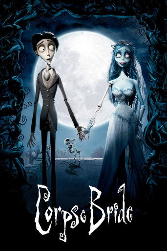
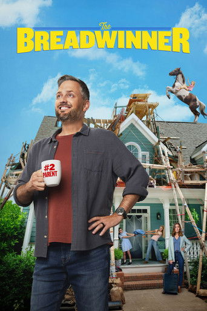

Top 10 Kids & Animated Movies cinemas + streaming
-
1—

Toy Story 5
Disney+Pixar's fifth Toy Story film, back with Woody and Buzz. Eight weeks after it reached Disney+, it is still one of the three most-streamed films in the US.
▶ TrailerPopularity357M minutes · #3 streaming film in the US (Nielsen)Rating92% Rotten Tomatoes · A CinemaScore -
2▲1

Forgotten Island
In cinemasDreamWorks' Filipino-inspired adventure, voiced by H.E.R., Liza Soberano and Dave Franco. It opened at #2 in the UK last weekend and comes to digital on 27 Oct.
▶ TrailerPopularity$35.8M US total · £1.3m UK opening, #2Rating95% Rotten Tomatoes · A CinemaScore -
3▼1

Ice Age (the whole series)
NetflixHuluManny, Sid and Diego's five prehistoric adventures are on Netflix. For the second week, they took half of the 10 spots in Netflix's English-film top 10.
▶ TrailerPopularity23.9M views across 5 films (Netflix) · Collision Course #3 with 6.3MRating76% Rotten Tomatoes for the first film · 18% for Collision Course -
4▲1

Coraline
HBO MaxHuluPeacockLaika's spooky stop-motion tale of a girl who finds a better version of her home behind a hidden door. It climbs the US charts every October.
▶ TrailerPopularity243M minutes · #6 streaming film in the US (Nielsen)Rating91% Rotten Tomatoes -
5NEW

Corpse Bride
NetflixTim Burton and Mike Johnson's stop-motion fairy tale, with Johnny Depp and Helena Bonham Carter. In its first week on Netflix's chart it went straight into the global top 10, in time for Halloween.
▶ TrailerPopularity4.6M views · #6 English film on Netflix worldwideRating85% Rotten Tomatoes -
6▲1

Shaun the Sheep: The Beast of Mossy Bottom
In cinemasRent / buy digitalAardman's new Shaun film, directed by Steve Cox and Matthew Walker. It has done much better at home in the UK than in the US, and it came to digital on 23 Oct.
▶ TrailerPopularity£4.2m UK total · £257,000 last weekendRating99% Rotten Tomatoes -
7▼1

Doraemon: Nobita and the Castle of the Undersea Devil
In Indian cinemasThe robot cat and Nobita head under the sea in the 2026 Doraemon film. It is slowing down: ₹2.21 crore net in week 3, after ₹8.43 crore in week 2.
▶ TrailerPopularity₹26.98 crore India gross after 21 days (Sacnilk)RatingNo major reviews · U certificate -
8NEW

The Breadwinner
NetflixComedian Nate Bargatze's first film, with Mandy Moore as his wife. Critics panned it, but families keep watching: it is #5 among films on Netflix US this week.
▶ TrailerPopularity232M minutes · #7 streaming film in the US (Nielsen)Rating19% Rotten Tomatoes · 85% audience score
How this list is ranked
- Popularity: Nielsen's US streaming chart, Netflix's weekly Top 10, and box office for films in cinemas.
- Ratings: Rotten Tomatoes critics' score and CinemaScore where available.
- What counts: animated films and films made for children, in cinemas or streaming.
- This week: Nielsen's newest US streaming chart covers 5–11 Oct, so the minutes figures are a week older than the Netflix and box-office numbers.
- NEW: with a previous week to compare, NEW marks a title new to the list; on a list's first week, a title released in the last 3 weeks.